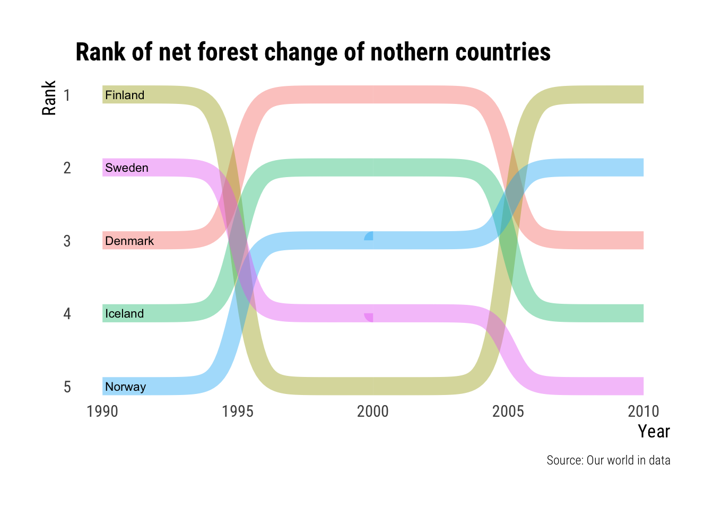
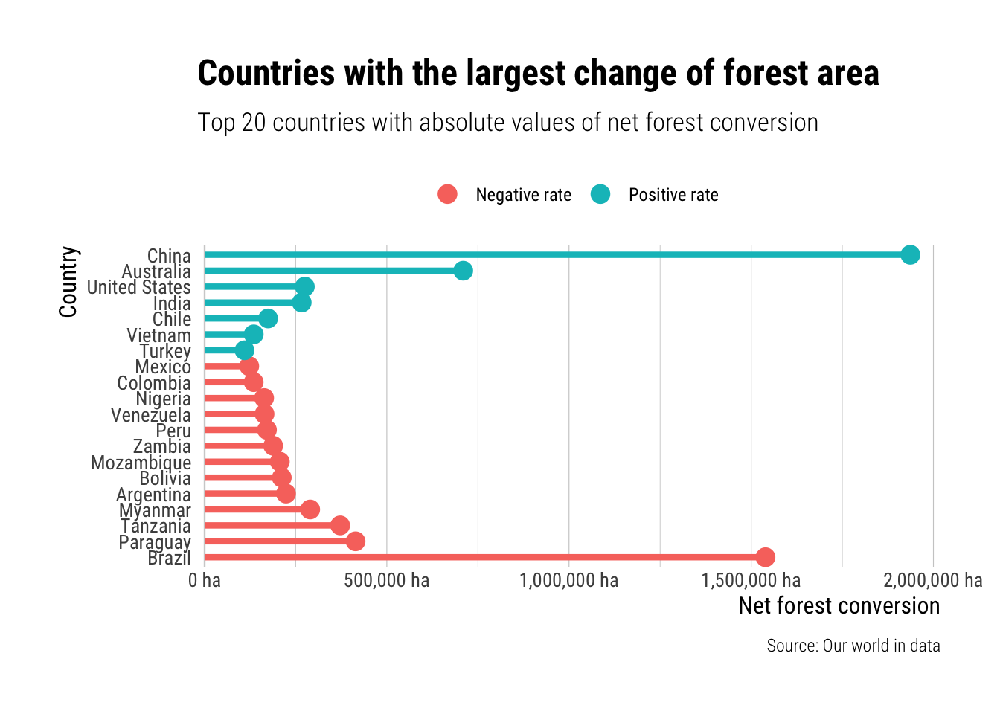

knitr::opts_chunk$set(
warning=FALSE,
code_folding=FALSE
)I’ve been wanting to play around in the TidyTuesday scene for a while now. The deforestation dataset (Ritchie and Roser 2021) is obviously of specific interest to me as a forest science student so I chose that one to begin with.
library(tidyverse)── Attaching packages ─────────────────────────────────────── tidyverse 1.3.1 ──✔ ggplot2 3.3.5 ✔ purrr 0.3.4
✔ tibble 3.1.6 ✔ dplyr 1.0.9
✔ tidyr 1.1.4 ✔ stringr 1.4.0
✔ readr 2.0.2 ✔ forcats 0.5.1── Conflicts ────────────────────────────────────────── tidyverse_conflicts() ──
✖ dplyr::filter() masks stats::filter()
✖ dplyr::lag() masks stats::lag()library(rmarkdown)
library(hrbrthemes)NOTE: Either Arial Narrow or Roboto Condensed fonts are required to use these themes. Please use hrbrthemes::import_roboto_condensed() to install Roboto Condensed and if Arial Narrow is not on your system, please see https://bit.ly/arialnarrowlibrary(ggbump) # For the maps and rank graph
tuesdata <- readRDS("posts/2021-12-20-deforestation/deforestation.data")Rank of Northern Countries
I’m gonna start it simple and the generate a simple ranked bump chart of the net change of forestry of the northern European countries using ggbump(Sjoberg 2020).
First of it to filter in the northern countries that we wish to see. We also need to filter out the 2015 data as there seem to be gaps in them. For each year we proceed to use rank() to rank each country by the net change in forest area.
countries <- c('Iceland', 'Finland', 'Sweden', 'Norway', 'Denmark')
ranked <- tuesdata$forest |>
filter(entity %in% countries) |>
filter(year <= 2010) |>
group_by(year) |>
mutate(rank = rank(-net_forest_conversion))ranked |> paged_table()With this data it is pretty straight forward to use geom_bump() to generate a simple bump map. I’m gonna use hrbrthemes(Rudis 2020) as a base theme for my graphs as it tends to be my default theme.
ranked |>
ggplot(aes(year, rank, color=entity, group=entity, label=entity)) +
geom_bump(
smooth=15, size=6, alpha=0.4
) +
geom_text(
data = ( ranked |> filter(year==1990) ),
hjust = "left", color = "black", nudge_x = 0.1, size = 3
) +
#geom_text(aes(label=net_forest_conversion), size=2, nudge_y = -0.2) +
scale_y_reverse() +
labs(
title = "Rank of net forest change of nothern countries",
y = "Rank",
x = "Year",
caption = "Source: Our world in data"
) +
theme_ipsum_rc(grid = "", axis_title_size = 13) +
theme(legend.position = "none")
It turns out that this was not a good way of viewing this data. But oh well. I will leave it here nevertheless.
Countries with the largest change of forest area.
Next to explore this same table I wish to generate a lollipop chart showing the countries of the world with the lagest positive and negative change in forest cover. To do this I take countries the top 20 absolute values of net forest conversion, I reorder those by real net_forest_conversion and then prepare a text for the coloring of negative or positive values.
forest_countries <- tuesdata$forest |>
filter(year == 2010, entity != "World") |>
slice_max(abs(net_forest_conversion), n=20) |>
mutate(
country = fct_reorder(as.factor(entity), net_forest_conversion),
negative = if_else(net_forest_conversion <= 0, "Negative rate", "Positive rate")
) |>
select(country, net_forest_conversion, negative)forest_countries |> paged_table()From this we can generate a basic lollipop chart using geom_segment() and geom_point() as the base for the lollipops. I also flip the coordinates as it is better than rotating the country labels to a near vertical position.
forest_countries |>
ggplot(aes(country, abs(net_forest_conversion), color=negative)) +
geom_hline(aes(yintercept=0), alpha=0.1) +
geom_segment(aes(
y = 0,
x = country,
yend = abs(net_forest_conversion),
xend = country
), show.legend=FALSE, size=1.5) +
geom_point(size=4) +
scale_y_comma(breaks=seq(0, 2500000, 500000), limits=c(0,2000000), suffix=" ha") +
labs(
title = "Countries with the largest change of forest area",
subtitle = "Top 20 countries with absolute values of net forest conversion",
caption = "Source: Our world in data",
x = "Country",
y = "Net forest conversion"
) +
coord_flip(clip = 'off') +
theme_ipsum_rc(grid="Xx", axis_title_size = 12, axis_text_size = 10,
) +
theme(
legend.position = "top",
legend.title = element_blank()
)
I kind of like this one. The reason I chose to use the absolute values, instead of having the 0 in the middle, was to make it easier to compare the rate of change. It highlights the crazy deforestation going on in Brazil and the even crazier amount of forest being planted in China.
To see how I use this data for map making check out my next post
References
Ritchie, Hannah, and Max Roser. 2021. “Forests and Deforestation.” Our World in Data. https://ourworldindata.org/forests-and-deforestation.
Rudis, Bob. 2020. Hrbrthemes: Additional Themes, Theme Components and Utilities for ’Ggplot2’. https://CRAN.R-project.org/package=hrbrthemes.
Sjoberg, David. 2020. Ggbump: Bump Chart and Sigmoid Curves. https://CRAN.R-project.org/package=ggbump.